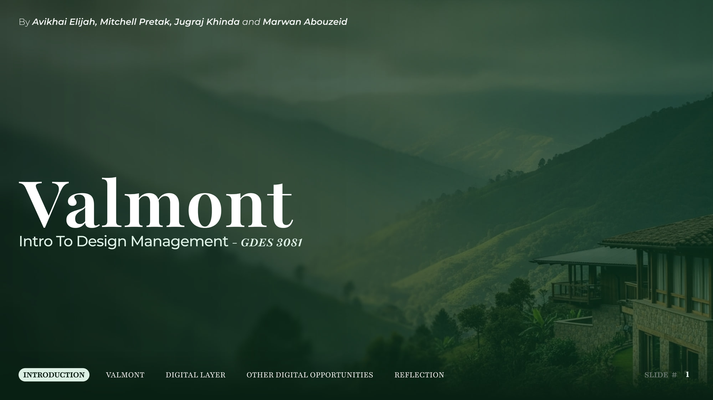
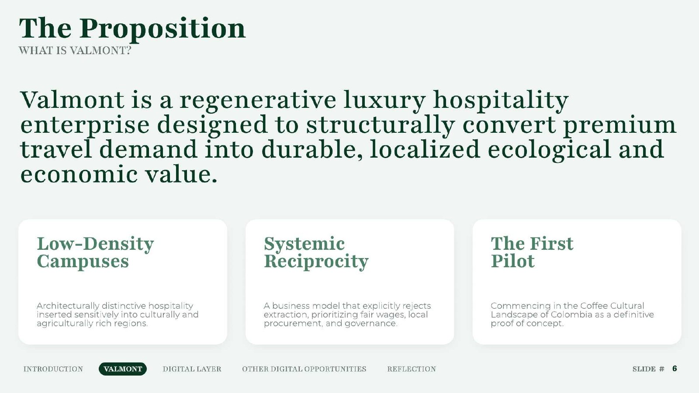
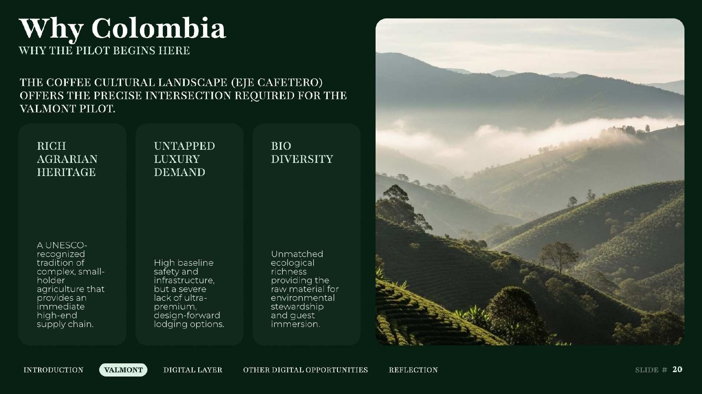
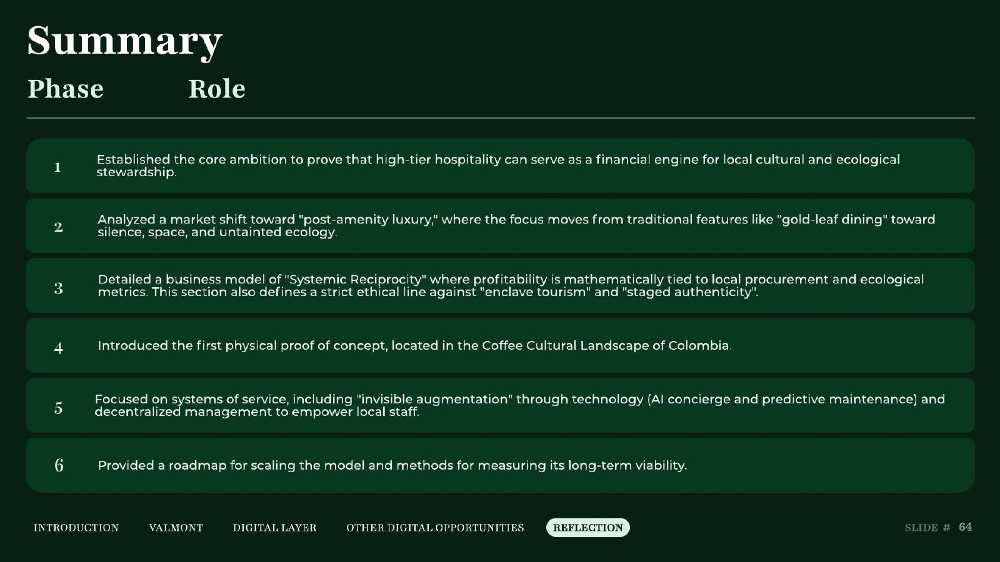
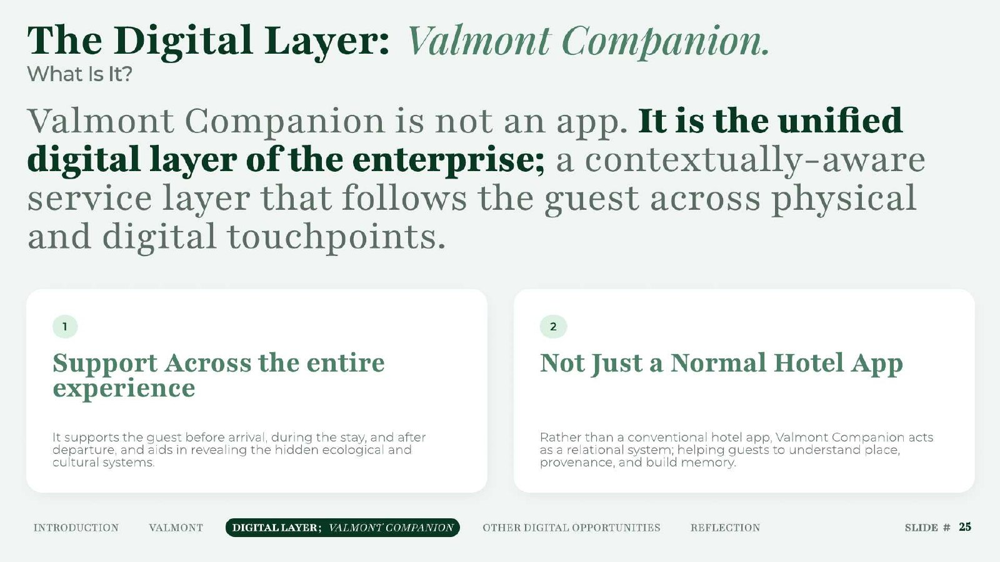
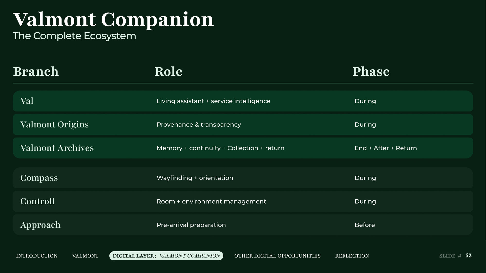
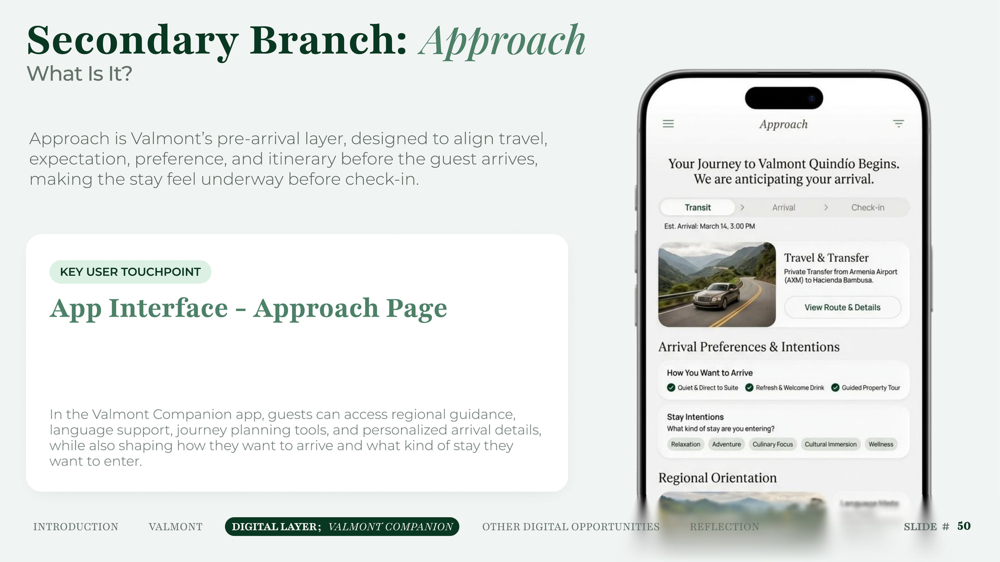

A speculative regenerative luxury hospitality brand with a pilot site in Colombia's coffee region, built around Valmont Companion, a digital service layer that follows the guest before, during and after a stay.

Project deck cover. This concept deck's imagery was AI-generated by the project team.
Luxury tourism usually extracts from the places it sells. Valmont starts from the opposite position. In the deck's words, it "exists to prove that the extraction model of tourism is obsolete," with a luxury asset acting as "a protective shield for local ecosystems and a powerful accelerator for local sovereignty."
The proposition is a regenerative luxury hospitality enterprise that converts premium travel demand into lasting local ecological and economic value, through low-density campuses, a business model we called systemic reciprocity (fair wages, local procurement and governance), and a first pilot.


I identified the gap in the market and the connection between communities and entrepreneurs that the concept depends on, proposed a way to address it, and tested different versions of what could work. The team iterated together toward the final concept and chose Colombia's Coffee Cultural Landscape as the pilot site.

I also compared Valmont's mission statement against global benchmarks and auditing structures, including the UN SDGs and other corporations, so the proposal sets an ethical line it can be measured against.
The service side of the proposal is Valmont Companion. The deck describes it as "not an app" but "the unified digital layer of the enterprise," a service layer that supports the guest before arrival, during the stay and after departure. It has six branches: Val (a living assistant), Origins (provenance and transparency), Archives (memory and return), Compass (wayfinding), Control (room and environment) and Approach (pre-arrival preparation).



Valmont is a speculative brand and service proposal, not a built business. Its output is a positioning, a business model, a pilot site and a mapped digital service ecosystem.
My specific contributions: I identified a gap in the market and the connection between communities and entrepreneurs, proposed a way to address that gap and tested different versions of it, compared Valmont's mission against global benchmarks and auditing structures (the UN SDGs and other corporations), and contributed to some image generation and app production.
AI disclosure: This concept deck's imagery was AI-generated by the project team. That includes the landscape images and the app mockups shown on this page.